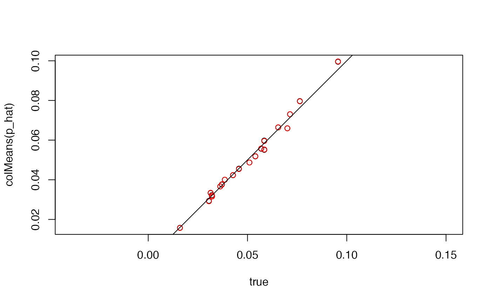

This vignette illustrates use of the lnm function using
a simulated dataset. First, we create some example data coming from a
true LNM model.
Next, we define the regression. We are using an extension of the formula interface that allows for multiple outcomes. This allows us to use it for a wider range of integration problems, like in our multimedia package for mediation analysis.
fit <- lnm(starts_with("y") ~ starts_with("x"), xy, refresh = 0)
#> Warning: Pareto k diagnostic value is 15.87. Resampling is disabled. Decreasing
#> tol_rel_obj may help if variational algorithm has terminated prematurely.
#> Otherwise consider using sampling instead.
fit#> [LNM Model]
#> Regression formula: y1 + y2 + y3 + y4 ... ~ x1 + x2 + x3 + x4 ...
#> 5-dimensional input and 20-dimensional output
#> First few entries of estimated regression coefficients:
#> # A tibble: 5 × 19
#> y1 y2 y3 y4 y5 y6 y7 y8 y9 y10 y11 y12 y13
#>
#> 1 0.79 0.14 0.67 0.86 0.7 0.43 0.41 0.63 0.37 0.54 0.43 0.16 0.63
#> 2 0.98 0.86 0.29 0.39 0.57 0.18 0.27 0.07 0.34 0.13 0.39 0.88 0.06
#> 3 0.46 0.35 0.69 0.5 0.42 0.15 0.86 0.43 0.88 0.82 0.16 0.53 0
#> 4 0.85 0.71 0.53 0.83 0.13 0.05 0.49 0.28 1 0.1 0.9 0.91 0.44
#> 5 0.79 0.26 0.84 0.43 0.85 0.77 0.63 0.03 0.82 0.18 0.09 0.8 0.67
#> # ℹ 6 more variables: y14 , y15 , y16 , y17 , y18 ,
#> # y19 Once we have estimated the model, we can use predict to get the
fitted compositions on the training data. We can also draw new samples
at different read depths and use newdata to sample at new
design points.
Let’s verify that the estimates are close to the truth. First we’ll get some fitted values.
The block below compares some posterior predictive samples with the original data. The overlap between red and black points means that the simulated data are a close match to the original samples.
true <- colMeans(example_data$y / rowSums(example_data$y))
fitted <- colMeans(y_star / rowSums(y_star))
plot(true, colMeans(p_hat), asp = 1)
points(true, fitted, col = "red")
abline(a = 0, b = 1)
We can also check the estimated coefficients. Everything is slightly shrunk towards zero, but this is what you would expect given the normal prior.
#> R version 4.4.1 Patched (2024-08-21 r87049)
#> Platform: aarch64-apple-darwin20
#> Running under: macOS Sonoma 14.5
#>
#> Matrix products: default
#> BLAS: /Library/Frameworks/R.framework/Versions/4.4-arm64/Resources/lib/libRblas.0.dylib
#> LAPACK: /Library/Frameworks/R.framework/Versions/4.4-arm64/Resources/lib/libRlapack.dylib; LAPACK version 3.12.0
#>
#> locale:
#> [1] en_US.UTF-8/en_US.UTF-8/en_US.UTF-8/C/en_US.UTF-8/en_US.UTF-8
#>
#> time zone: America/Chicago
#> tzcode source: internal
#>
#> attached base packages:
#> [1] stats graphics grDevices utils datasets methods base
#>
#> other attached packages:
#> [1] dplyr_1.1.4 miniLNM_0.1.0
#>
#> loaded via a namespace (and not attached):
#> [1] tensorA_0.36.2.1 sass_0.4.9 utf8_1.2.4
#> [4] generics_0.1.3 digest_0.6.37 magrittr_2.0.3
#> [7] evaluate_0.24.0 grid_4.4.1 fastmap_1.2.0
#> [10] operator.tools_1.6.3 jsonlite_1.8.8 pkgbuild_1.4.4
#> [13] backports_1.5.0 gridExtra_2.3 fansi_1.0.6
#> [16] scales_1.3.0 QuickJSR_1.3.1 codetools_0.2-20
#> [19] textshaping_0.4.0 jquerylib_0.1.4 abind_1.4-5
#> [22] cli_3.6.3 rlang_1.1.4 munsell_0.5.1
#> [25] withr_3.0.1 cachem_1.1.0 yaml_2.3.10
#> [28] StanHeaders_2.32.10 parallel_4.4.1 tools_4.4.1
#> [31] rstan_2.32.6 inline_0.3.19 rstantools_2.4.0
#> [34] checkmate_2.3.2 colorspace_2.1-1 ggplot2_3.5.1
#> [37] curl_5.2.2 vctrs_0.6.5 posterior_1.6.0
#> [40] R6_2.5.1 matrixStats_1.4.0 stats4_4.4.1
#> [43] lifecycle_1.0.4 V8_5.0.0 fs_1.6.4
#> [46] htmlwidgets_1.6.4 ragg_1.3.2 pkgconfig_2.0.3
#> [49] desc_1.4.3 pkgdown_2.1.0 RcppParallel_5.1.9
#> [52] pillar_1.9.0 bslib_0.8.0 gtable_0.3.5
#> [55] loo_2.8.0 glue_1.7.0 Rcpp_1.0.13
#> [58] systemfonts_1.1.0 highr_0.11 xfun_0.47
#> [61] tibble_3.2.1 tidyselect_1.2.1 knitr_1.48
#> [64] htmltools_0.5.8.1 rmarkdown_2.28 formula.tools_1.7.1
#> [67] compiler_4.4.1 distributional_0.4.0